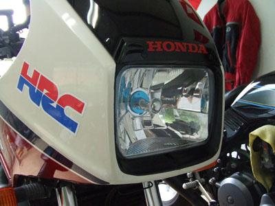

Contents
Headlights
H4 Conversion
- The 82 Sabre/Magna used sealed beam headlights (rectangular for Sabre, round for Magna). There are direct replacement reflector assemblies available for each to convert to H-4 bulbs from the 83 models.
- 83 V45 Sabre Rect. H-4 Reflector 33120-MG5-671
- 83 V45 Magna Round H-4 Reflector 33100-MF5-751
- These part numbers may have since been superseded, but it should point you in the right direction.
- The 83-85 Interceptors can use an aftermarket headlight
- 82-93 Chevy S10 Headlight (diamond cut, clear)

Replacing Headlight in Hondaline Fairing
Phil Ross writes:
Anyone with a Hondaline fairing should acquaint themselves with this procedure before he/she needs it, because the only time you REALLY need to to this is in the dark beside the road. Mike Walt used to preface the procedure by suggesting taking a few cleansing breaths while repeating the mantra, "Nothing I break can be replaced." We're way past that now, though, aren't we?
The headlight assembly is secured with a 17mm barrel nut behind the headlight adjuster and a 10mm acorn nut about four inches to the right of it. The adjuster knob is secured by a very tiny Phillips head setscrew. Tools that help: a #1 Phillips bit and a 17mm deep-well socket. These should be in your mobile toolkit if you have a Hondaline fairing. It can be done with the bike's toolkit, but that's not optimal.
First, remove the headlight adjusting knob. It's held on the adjuster shaft by a tiny M3 Phillips head setscrew. It's in tight and you do *not* want to strip the head (because if you do it's NEVER coming off), so use a #1 phillips bit in a small screwdriver handle. Turn the adjuster knob so you can access it cleanly. Once you break it loose, use the bit only to unscrew it, with the setscrew hole in the knob in the 12:00 position. When it's loose, turn the knob 180 degrees and tap the screw out into your hand. You don't want to drop it. If you do, it's gone forever.
You can now access the 17mm barrel nut. Use the deep-well socket for this. Then remove the 10mm acorn nut.
Pry the lexan headlight cover out of the gasket mount with a small flat-blade screwdriver. This would be a good time to clean it, and the gasket, of all of the built-up bug goop.
The headlight assembly should pull right out. You may need to tap on the adjuster shaft a little bit.
Check the reflector. You may want to clean it up a little. They seem to get a film of dirt on them that diffuses rather than reflects light. Mine worked a whole lot better after I cleaned the reflector. You can get a small washcloth with Windex inside it easily enough once the bulb's out.
Change the bulb.
To reassemble, reverse the order of disassembly. Since the barrel nut on the adjuster shaft is held in place with a lock washer, I use the 17mm deep-well socket with hand torque only (no ratchet handle) to resecure it. Makes it easier to get off next time the headlight blows. Again, you want to be able to do this in the dark beside the road.
Getting the set screw back in the adjuster knob can be a little fussy. Put the knob back on, rotate the knob back up so the setscrew hole is at an 11:00 or 12:00 position, and drop the screw in. Start it using the #1 Phillips bit between your thumb and forefinger, and tighten it down using only finger torque. It won't be the problem getting it out next time that it was this time.
That's it.
Cheers--Phil
Increased Wattage
Increased wattage bulbs are popular, from 100w/55w on up; at least a couple of list members use 130/90s. Sold by DK, Chaparral, etc. Higher wattage bulbs can also be found at NAPA, Pep Boys and the like. No problems with wiring, burnt reflectors, or tickets are reported. UPDATED: one list member has reported a damaged reflector from a 90/100W light. [High-wattage bulbs are illegal in many places, if you care.]
Trouble-shooting
If the headlight fails to come on either high or low beam, check for voltage at the starter switch terminal to the headlight. (The starter switch turns off the headlight while cranking.) Dirty contacts are fairly common; treat with electrical contact cleaner. If this fails, you can try disassembling the switch and polishing the contacts with crocus cloth, but you may have to buy an entire starter/kill switch assembly, since the individual switches aren't sold separately.